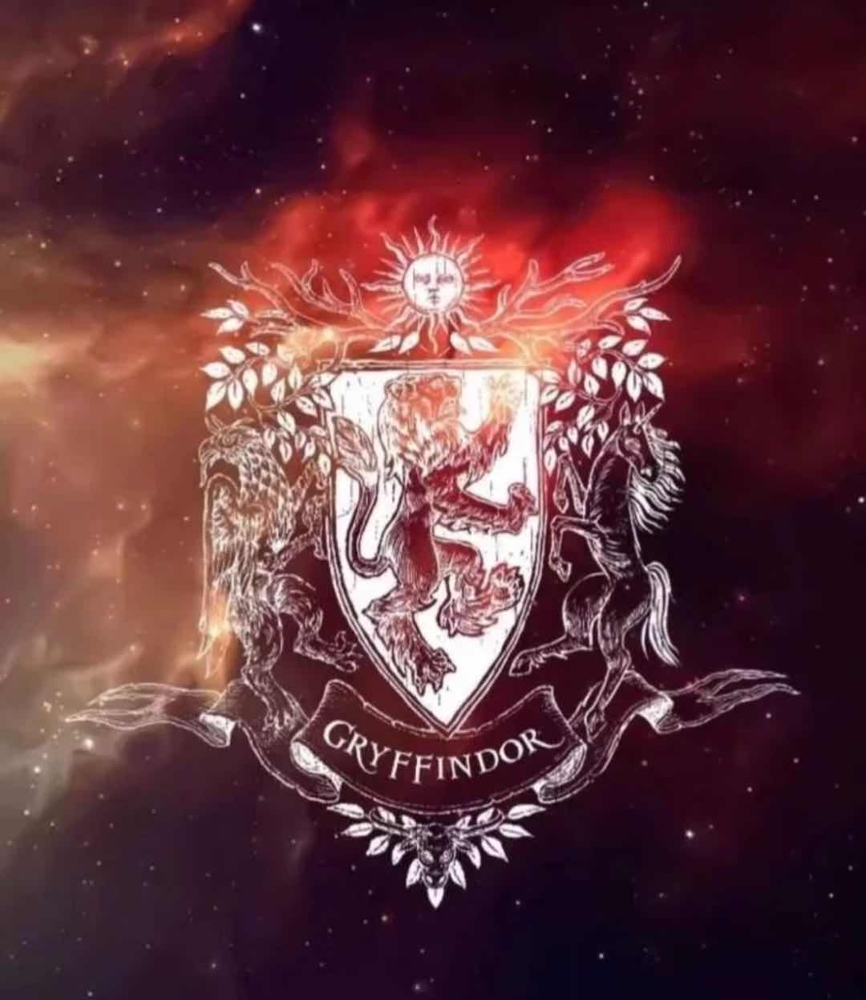

霍格沃茨四大分院
格兰芬多
格兰芬多是《哈利·波特》系列中，霍格沃茨四学院之一。始建于9世纪。用创办人戈德里克·格兰芬多的名字命名的。这个学院培养出了诸如哈利的父母，邓布利多校长等优秀的巫师和女巫。
据说只有真正的格兰芬多才能把戈德里克·格兰芬多剑从分院帽中拔出。哈利二年级（哈利波特与密室）时就拔出过此剑。在《哈利波特与死亡圣器》中，纳威·隆巴顿拔出了格兰芬多宝剑杀死了伏地魔的大蛇纳吉尼。

名称寓意
法语gryffin d‘or，意为金色的格兰芬（griffin）。格兰芬，即“狮鹫”，是希腊神话中一种半狮半鹰的生物，事实上就是鹰头狮身有翼兽。
西方哲学来自希腊。生于公元前6世纪20年代、死于5世纪40年代、被尊为希腊七贤之一的泰勒斯认为水是万物之母。公元前5世纪中叶活动的思想家安拉克西米尼认为组成万物的是风。生于公元前5世纪30年代，死于4世纪70年代的辩证法奠基人之一赫拉克利特认为万物由火而生。公元前4世纪的医生、哲学家安培杜克列综合了他以前哲学家们的见解，在他们所提出的水、风和火之外，又加上土，成为组成一切物质的四元素。
格兰芬多代表火，拉文克劳代表风，赫奇帕奇代表土，斯莱特林代表水。四大元素同时存在时，构成了一个完整的体系。但众所周知，他们同时也各自独立。
代表动物狮子：万兽之王，勇敢和冒险的象征
英文：Gryffindor
代表颜色：红色和金色
学院院长：麦格教授（米勒娃·麦格，在哈利波特系列第1-6部中担任变形课教师,哈利波特系列1-5部担任霍格沃茨副校长，第6部中在校长邓布利多牺牲后升任代理校长，第7部打败伏地魔后成为校长。）
幽灵：差点没头的尼克（尼古拉斯·德·敏西-波平顿爵士)
格兰芬多休息室
学院标志，即代表动物：狮子
入口：格兰芬多塔8楼
格兰芬多城堡入口画像：胖夫人、卡多根爵士
公共休息室：位于入口画像墙洞后，为一个舒适的圆形房间，摆满了软绵绵的扶手椅，有两条螺旋梯各通往男、女生宿舍。宿舍（男生）陈列：五张带四根帷柱的床，垂挂着深红色法兰绒幔帐。
学院创办者：戈德里克·格兰芬多（Godric Gryffindor）
招生标准：英勇无畏，奋不顾身。大胆无畏，喜爱冒险。
差点没头的尼克和胖夫人
创始人遗物：格兰芬多的宝剑（这是由妖精打造的宝剑，可以排斥灰尘，吸收比它强的物质）。分院帽（戈德里克·格兰芬多的巫师帽，在里面注入了四大创始人的思想）
分院帽的歌
你也许属于格兰芬多，
那里有埋藏在心底的勇敢，
他们的胆识、气魄和豪爽，
使格兰芬多出类拔萃；
You might belong in Gryffindor
Where dwell the brave at heart
Their daring nerve and chivalry
Set Griffindor apart;
勇敢的格兰芬多，来自荒芜的沼泽，
格兰芬多说：“我们所教的学生，
必须英勇无畏，奋不顾身。”
学生
在校生
哈利·波特、赫敏·格兰杰、罗恩·韦斯莱、科林·克里维、丹尼斯·克里维、西莫·斐尼甘、迪安·托马斯,帕瓦蒂·佩蒂尔、拉文德·布朗、纳威·隆巴顿、金妮·韦斯莱、凯蒂·贝尔、纳塔丽·麦克唐纳、弗雷德·韦斯莱、乔治·韦斯莱、罗米达▪万尼
毕业生
凯蒂·贝尔、李·乔丹、艾丽娅·斯平内特、安吉利娜·约翰逊、奥利弗·伍德、珀西·韦斯莱、比尔·韦斯莱、查理·韦斯莱、莫丽·韦斯莱、亚瑟·韦斯莱、莉莉·波特、詹姆·波特、莱姆斯·卢平、小矮星彼得、小天狼星·布莱克、米勒娃·麦格、阿不思·邓布利多等。（注：弗雷德·韦斯莱和乔治·韦斯莱并没有毕业）
魁地奇球队
格兰芬多魁地奇球队
格兰芬多学院与魁地奇渊源颇深——要知道，魁地奇球就是由格兰芬多的学生魁地奇兄弟创造出来的。格兰芬多魁地奇球队只从格兰芬多学院的学生中选取队员，一般情况下一年级新生不能加入院队。
格兰芬多队史部分球员：追球手：艾丽娅·斯平内特、安吉利娜·约翰逊，凯蒂·贝尔，金妮·韦斯莱，罗丝·韦斯莱，德米尔扎·罗宾斯
守门员：奥利弗·伍德，罗恩·韦斯莱
找球手：詹姆·波特，查理·韦斯莱，哈利·波特（20世纪唯一一个入选格兰芬多的新生）金妮·韦斯莱
击球手：弗雷德·韦斯莱，乔治·韦斯莱，吉米·珀克斯，里切·古特
李·乔丹曾担任霍格沃茨魁地奇比赛的解说员。卢娜·洛夫古德，扎卡莱斯-史密斯也曾担任解说员。 根据《哈利·波特》第三册85页的叙述：“到现在为止，格兰芬多已经七年没有赢了。”可以推测得知，格兰芬多球队应该是在1985-1986学年——查理·韦斯莱读二年级的时候，赢得了魁地奇学院杯，此后一直在没有机会夺冠，直到1993-1994学年，哈利·波特读三年级的时候，才在奥利弗·伍德的带领下，重新夺得魁地奇学院杯。
妖精之剑
格兰芬多之剑是妖精制造，属于戈德里克·格兰芬多的遗物。在《哈利·波特与密室》中，哈利·波特就是利用它来击败蛇妖。在《混血王子》和《死亡圣器》中，阿不思·邓布利多、哈利·波特、纳威·隆巴顿都用它来破坏伏地魔的魂器。格兰芬多之剑只会在真正传人面前才会出现，但传人并非单指一个人，而是他有足够勇气时剑就会出现在他的面前。